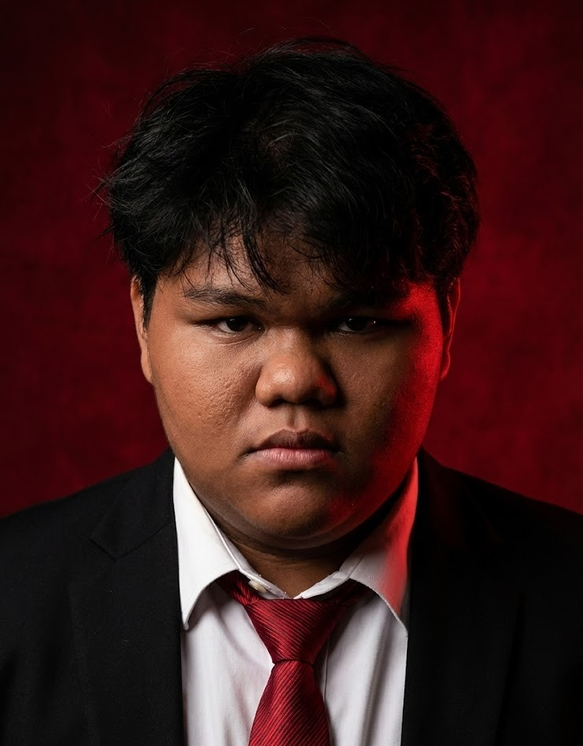

Muhammad Farhan bin Saad
Asal: Muar, Johor
I am Muhammad Farhan bin Saad, an Information Technology student at the Faculty of Informatics and Computing (FIK), Universiti Sultan Zainal Abidin (UniSZA), specializing in Media Informatics and multimedia development. My expertise includes 3D modeling, animation design, graphic design, Augmented Reality (AR), and interactive application development.
Currently, I am developing my Final Year Project (FYP) titled AR Tanjak Melayu. The project is being developed using Unity to create an interactive Augmented Reality (AR) application that introduces and preserves the heritage of traditional Malay tanjak in a more engaging and modern way. This personal portfolio website was developed to fulfill the requirements of the CSD34203 (Project Portfolio) course, while also showcasing my projects, skills, and development progress through GitHub.
🎯 Kemahiran Teknis & Insaniah (Skills)
🎓 Pendidikan (Education)
Bachelor of Information Technology (Media Informatics)
Universiti Sultan Zainal Abidin (UniSZA)
2023 - Present
Status: Sedang mengikuti pengajian (Semester 6)
Sijil Tinggi Persekolahan Malaysia (STPM)
SMK Tun Perak
2021 - 2023
Sijil Pelajaran Malaysia (SPM)
SMK Tun Perak
2016 - 2020
💼 Pengalaman Projek (Experience)
Projek Tahun Akhir - AR Tanjak [Ongoing]
App AR (Augmented Reality)
- Membangunkan aplikasi AR mudah alih untuk memvisualisasikan busana kepala tradisional Melayu (Tanjak).
- Mencipta model 3D dan mengintegrasikannya ke dalam persekitaran AR.
- Melaksanakan interaksi AR berasaskan penanda (*marker-based*) untuk visualisasi masa nyata.
Projek Pembanguna Video Games
Tugasan Kursus Universiti
- Membangunkan permainan interaktif mudah sebagai sebahagian daripada tugasan akademik.
- Mereka bentuk mekanik permainan, logik pengaturcaraan asas, dan antara muka pengguna (UI).
- Menjalankan fasa pengujian (*testing*) dan pembetulan pepijat (*debugging*).
Projek Animmation 3D (Blender)
Tugasan Akademik
- Mencipta model watak dan persekitaran 3D menggunakan perisian Blender.
- Mengaplikasikan teknik tekstur, pencahayaan, pencapaian rendering, serta membina jujukan animasi pendek (1-2 minit).